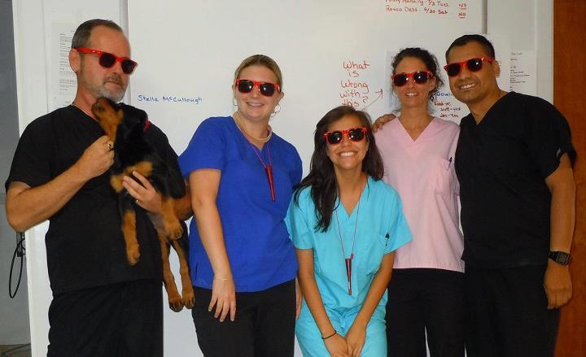

About Us
St. Francis Hospital for Animals was founded in 1996 with the idea that bigger is NOT always better. While a large practice with many rotating doctors may have some advantages, sometimes clients and patients become just a number. We prefer a smaller, more personal practice atmosphere where we take the time to get to know you and your pet and their individual personalities and health needs. You will experience the continuity of having a doctor take care of your animal who already knows them. There is no need to guess who is on duty any given day.
Our practice is full-service. We offer the latest diagnostics and treatments available, either on-site or via our association with a local group of specialists. Additionally, our doctor is a firm believer in continuing education to keep up with the most current concepts of preventive medicine. In fact, we use risk assessment to tailor each patient's wellness care to his or her lifestyle, giving your pet only what is necessary. Call us or stop by for a visit. We'll be happy to answer any questions your may have.
St. Francis Hospital for Animals: "Modern medicine with old fashioned care." Animal Hospital Charlotte